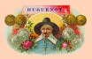

by
Stefan Bielinski
Huguenots were French speaking Protestants who came to America during the seventeenth century to escape religious persecution and civil oppression in France. Many Huguenot families settled in New York colony. A number of them established branches in Albany. Generally speaking, early Albany's Huguenots were not numerous - but they were prominent!
In eighteenth century early American History, "Huguenot" has come to mean French Protestant. In New Rochelle, on Staten Island, in and New Paltz, Huguenots often maintained their ethnic identity. In New York City and in Albany, most Huguenots seem to have tended to become part of the community mainstream.
We have encountered a number of attempts to further define "The Huguenots." For our purposes, the term has some cultural definition (French), but, at present, we are unmoved to further categorize them. But we are keenly interested in how they functioned within the larger early Albany community!
Now in its infancy, this page will provide basic access to Huguenot history links and general information on Albany's Huguenots. Please remember that we are concerned ONLY with people who actually lived in the city of Albany before 1800.
We begin with a partial list of early Albany's Huguenot families: De Foreest, De Peyster, De Lancey, De Wandelaer, Truax.
A number of Huguenot-ancestry women became the brides of early Albany residents. These include, for openers, Susanna Truax Wendell, Catharina De Wandelaer Gansevoort and Susanna Baueux Schuyler and Magdalena Bayeux Holland.
Also, traditional (antiquarian) resources refer to a number of people as Huguenots. John David and Thomas S. Diamond were early Albany residents with unsubstantiated Huguenot "pedigrees."
The term "Walloon" (In our context, the legendary farmers who were sent to produce food to feed the soldiers and traders at Fort Orange) is similarly perplexing! For convenience, we define them as French speaking Protestants from the Spanish Netherlands. But that would make them Huguenots as well! An online article succinctly summerizes the "Belgians."
notes
Although seemingly not personally connected to early Albany's Huguenot ancestry residents, the Huguenots of New Paltz represented one of two major settlement enclaves in New York colony. The almost exclusively French community in New Rochelle was the other.
 Sources: This profile is derived chiefly from family and community-based resources - both of which contain material of puzzling quality. Online resources: The National Huguenot Society; link to Cyndi's List; link to Huguenot books; also interesting is U-S-History.com; Wikipedia. The Olive Tree has proved a reliable access point.
Sources: This profile is derived chiefly from family and community-based resources - both of which contain material of puzzling quality. Online resources: The National Huguenot Society; link to Cyndi's List; link to Huguenot books; also interesting is U-S-History.com; Wikipedia. The Olive Tree has proved a reliable access point.
first posted: 2/25/04; last updated 12/28/12